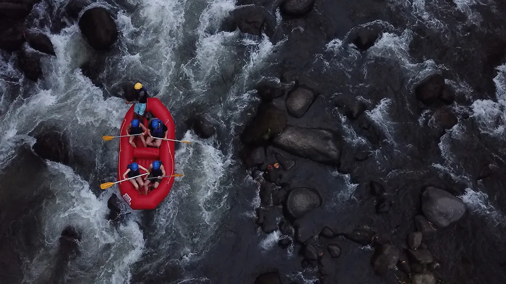
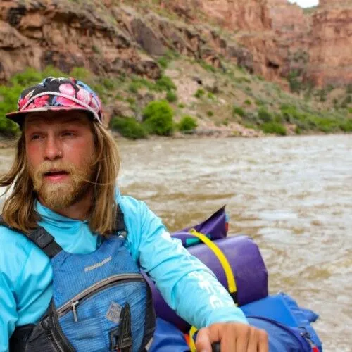
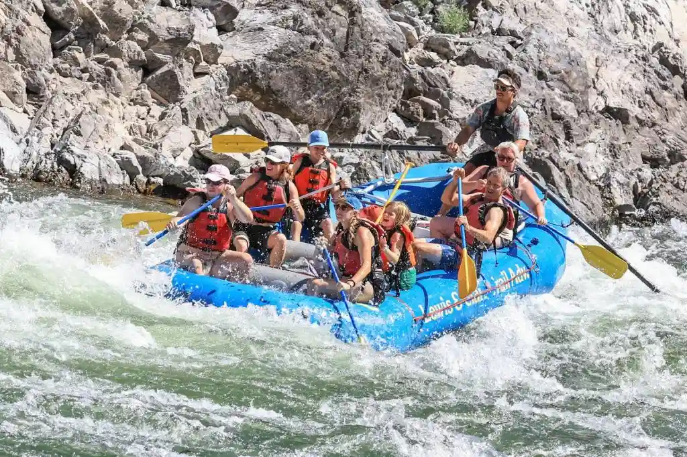

If you're looking to get bumped, scraped up, sunburned, and soaked, all while having the time of your life, you've come to the right place.


Dry Oar
History
Founded in 2002 by four eccentric brothers and their slightly-less-eccentric sister, Dry Oar has become the place of initiation for anyone in west Montana for anyone wishing to enter the world of whitewater rafting. Our second location near Missoula, opened in 2018, expands on our mission to foster a love for the great outdoors, all while help people to push past their limits on our testy rivers.
Part of our success surely stems from our utilisation of the Missoula section of the Clark Fork, which has very mild sections for our novices. As we build up their confidence, they become able to tackle the more demanding portions, where they inevitably experience true whitewater! Hardened students usually end up bringing friends back to this portion of the Fork to pay hommage to their roots.